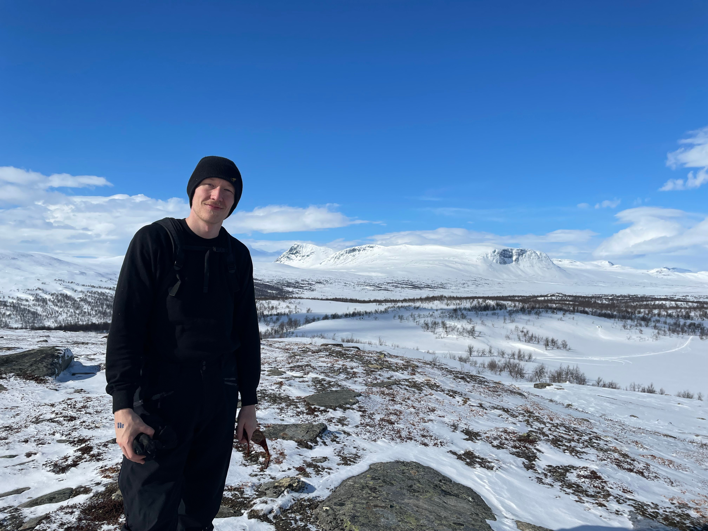
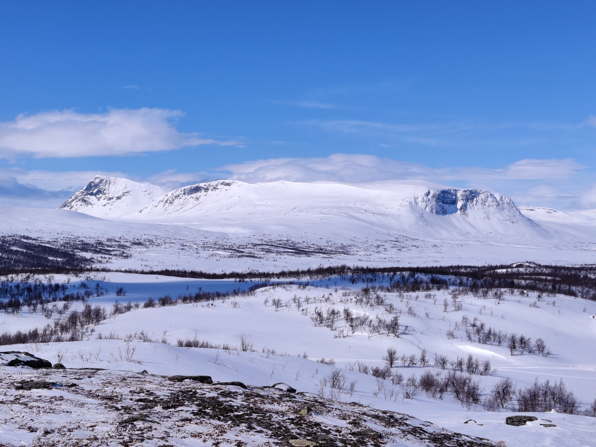
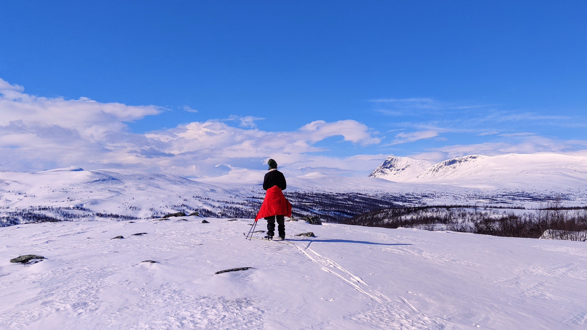
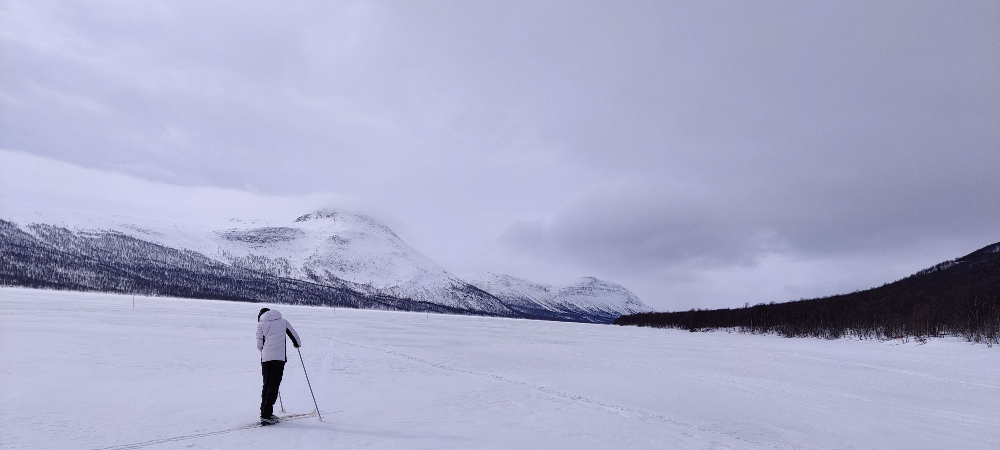
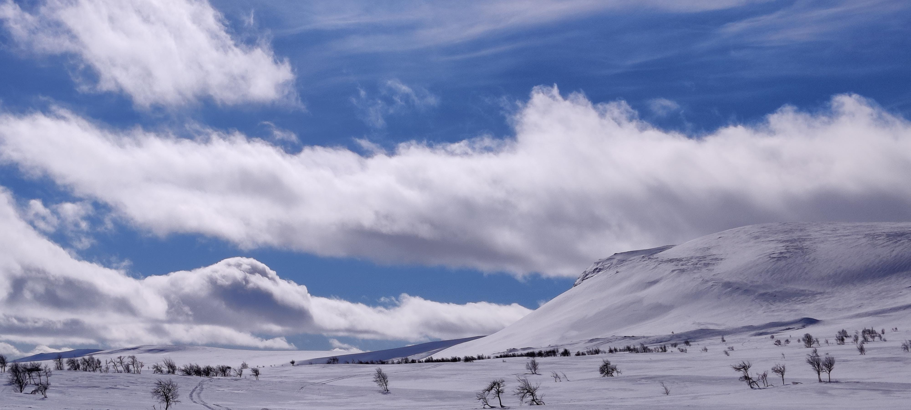
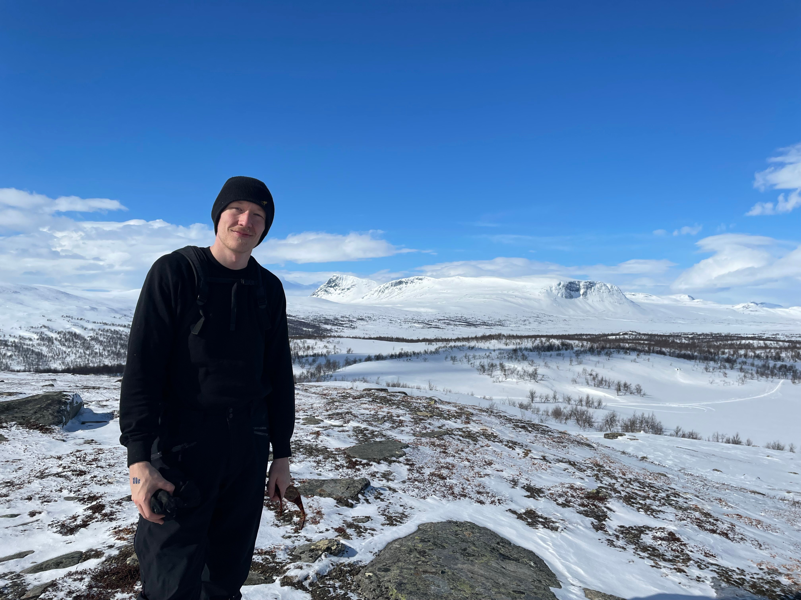
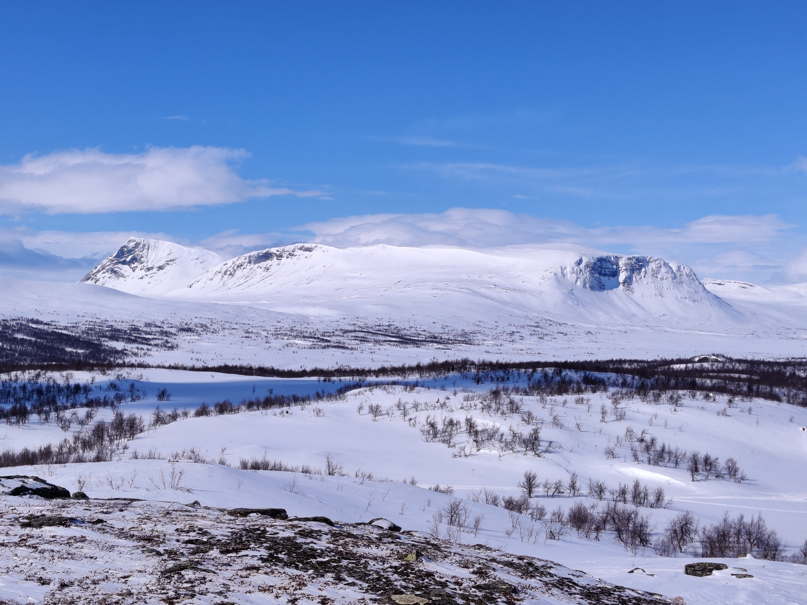
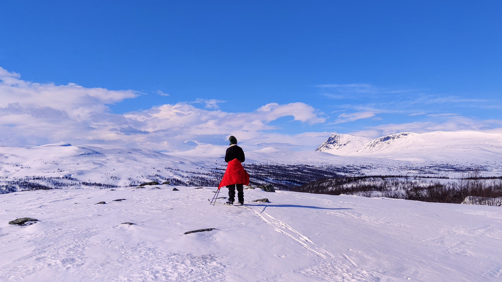
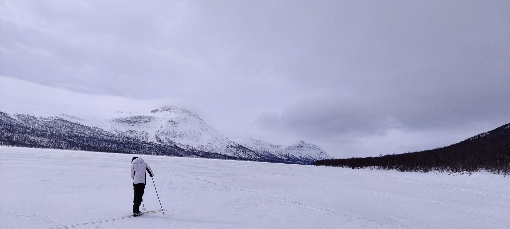
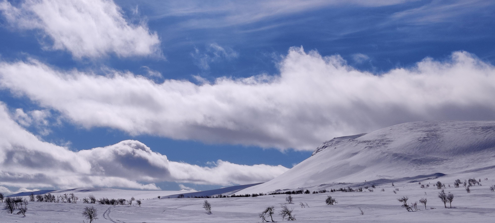

Ammarnäs, Sweden
These pictures are taken with the 2021 Oneplus Nord. Ammarnäs is a small remote village in Lappland, with beautiful untouched nature and trails.
    
These pictures are taken with the 2021 Oneplus Nord. Ammarnäs is a small remote village in Lappland, with beautiful untouched nature and trails.
    